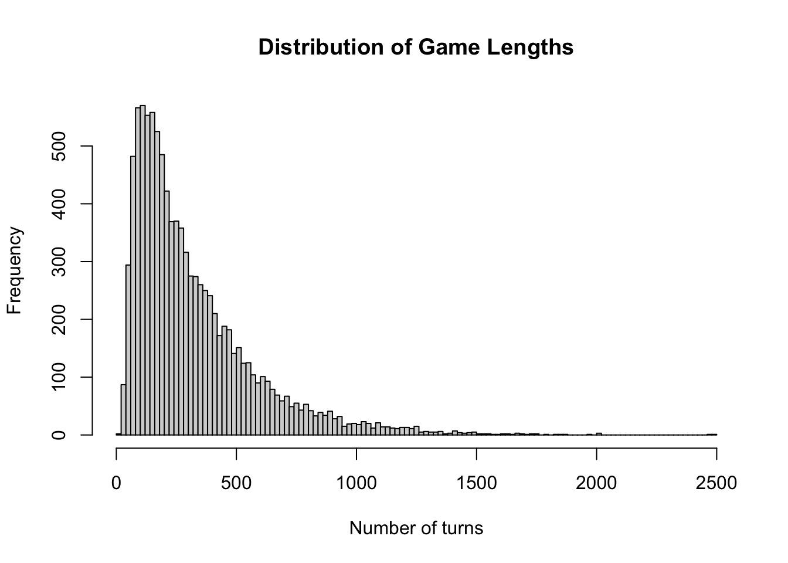
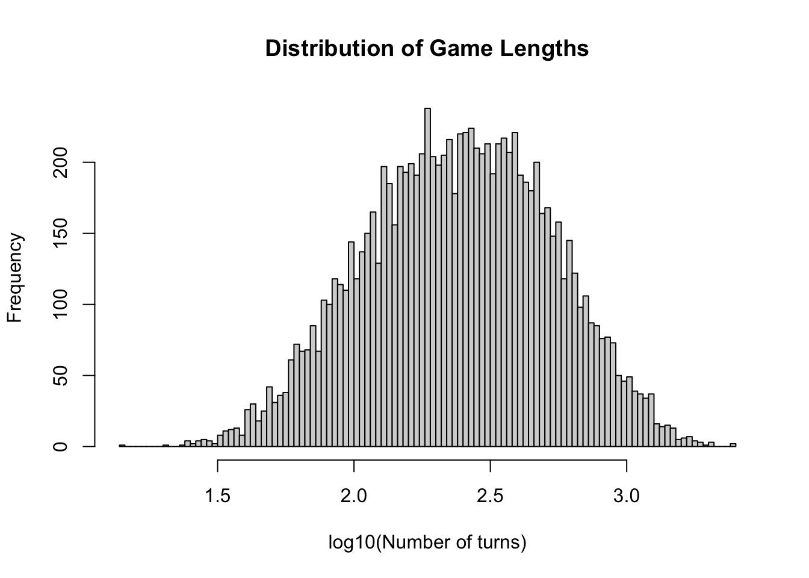
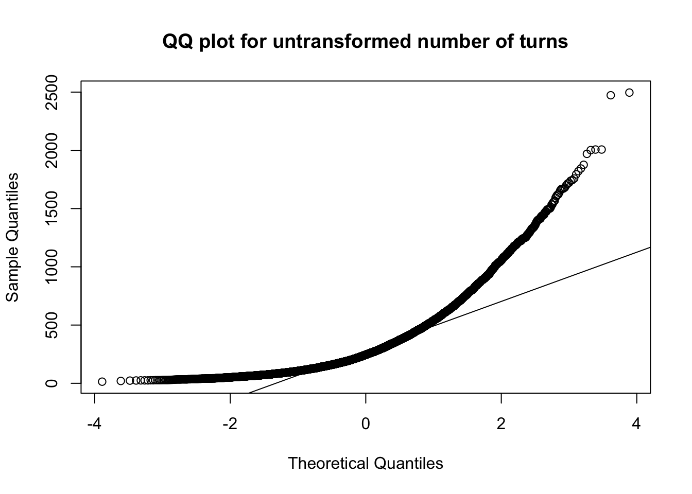
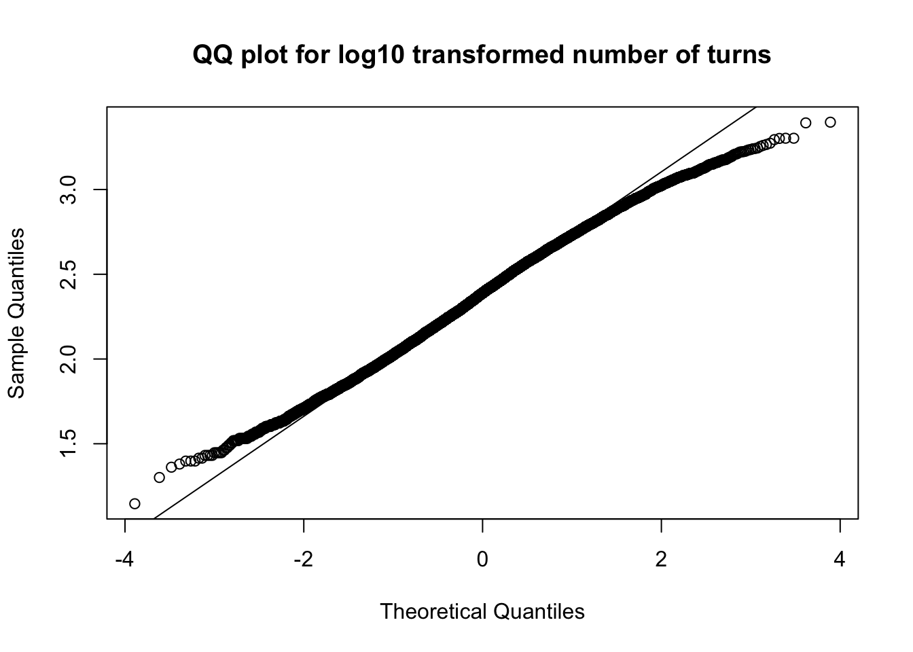

Have you ever played War? have you ever wondered When will this be over!?
Well I have, and after a weekend of being forced to play with my little cousin, I decided enough is enough. Lets do some simulation and some data analysis to answer some basic questions:
How long does the average game take?
How does the initial hand affect your winning percentage?
How often will I win if I have all the aces?
How often will I win depending on the average hand strength?
How does the ante size affect game duration?
Rules
Simulation in python
Setup
Since I am not too used to dealing with numerical simulations of card games, I’m going to set up some classes in python. Once the simulations are done I’ll import the data into R to do some analysis.
Here are the two classes I set up:
Code
from random import shuffleclass Player():"""Player is the class that represents a player. Each player has a hand of cards. The class also includes getting cards from a players hand, and adding the winnings to the bottom of the players hand"""def__init__(self, hand, name):self.hand = hand[:]self.name = name# Once a player wins a battle, they need to add their winnings to the bottom of their hand. Since the rules don't seem to indicate their order, I explicitly shuffle the winnings before adding them.def add_winnings(self, cards): shuffle(cards)self.hand += cards# Method to get next card. If the player has run out of cards, this method returns None, which indicates to the Game class that the game is over and the player has lost. def get_next_card(self):iflen(self.hand)==0:return(None)else: next_card =self.hand.pop(0)return(next_card)class Game():"""docstring for Game."""def__init__(self, war_ante):self.war_ante = war_anteself.deck = [i for i inrange(1,14) for j inrange(0,4)] shuffle(self.deck)self.p0_start =self.deck[:26]self.p1_start =self.deck[26:]self.player_0 = Player(self.p0_start, "Player 0")self.player_1 = Player(self.p1_start, "Player 1")self.winner =Noneself.num_turns =0def war(self, pot, extra_cards): pot += [self.player_0.get_next_card() for i inrange(0,extra_cards)] + [self.player_1.get_next_card() for i inrange(0,extra_cards)] card_0 =self.player_0.get_next_card() card_1 =self.player_1.get_next_card()if card_0 ==None:self.winner =1return()elif card_1 ==None:self.winner =0return() pot += [card_0, card_1]if card_0 > card_1:self.player_0.add_winnings(pot)elif card_0 < card_1:self.player_1.add_winnings(pot)elif card_0 == card_1:self.war(pot, self.war_ante)def play(self):whileself.winner ==None:self.num_turns +=1self.war([], 0)
Simulation
Now lets run the simulations:
Code
import numpy as npimport pandas as pdfrom game import*for ante inrange(0,11): games = [Game(ante) for i inrange(0,10000)] [g.play() for g in games]all= [[g.war_ante, g.winner, g.num_turns, np.mean(g.p0_start)] + [g.p0_start.count(c) for c inrange(1,14)] for g in games] all_df = pd.DataFrame.from_records(all) all_df.to_csv('output/results_'+str(anti) +'.csv', index =False)
Running the analysis in R
Setup
First lets load up packages and set up the data from python
For normal games, the war ante is 2, so lets analyze that first:
Code
results = results_all %>%filter(war_ante ==2)
Now lets get to the questions: ### How long does the average game take Lets use a histogram to look at the distribution of games
Code
hist(results[,"num_turns"], breaks =100,xlab ='Number of turns',main ='Distribution of Game Lengths')

The number of turns seems to have a very large right sided tail, and is not normally distributed. Since I’m interested in knowing the number of turns in terms of order of magnitude, lets log the data. Logging the data will also make the distribution resemble the normal distribution.
Code
hist(log10(results[,"num_turns"]), breaks =100,xlab ='log10(Number of turns)',main ='Distribution of Game Lengths')

Code
qqnorm(results[,'num_turns'], main ='QQ plot for untransformed number of turns')qqline(results[,'num_turns'])

Code
qqnorm(log10(results[,'num_turns']), main ='QQ plot for log10 transformed number of turns')qqline(log10(results[,'num_turns']))

So it looks like 80% of regular games of war last between 85 and 657 turns, with a mean of ~320 turns.
How does the initial hand affect your winning percentage?
How often will I win if I have all the aces?
Code
tab = results %>%select(winner, player0_As) %>% tableper =apply(tab,2,function(x) x /sum(x))tab
It seems that with 4 aces, a player will win 82% of the time. with 3 aces they will win 67% of the time, and will have about even chances if each player has 2 aces.
How often will I win depending on the average hand strength?
model =glm(winner~player0_mean, family=binomial(link='logit'), data = results)plot(results$player0_mean, predict(model, type='response'), xlim=c(5,9), ylim=c(0,1), xlab ='Player zero\'s starting strength', ylab ='Chance of player zero winning')
It seems that the larger the war_ante, the faster the game will be over! So if you’re playing your cousin and want the average game over in about 100 turns, changing the rules to have an ante of 6 cards during a “war” is the way to go!
Source Code
---title: "Analysis of War - the card game"author: "Kieran Mace"date: "2017-06-24"format: html: default---```{r setup, include=FALSE}knitr::opts_chunk$set(echo =TRUE)```# IntroducitonHave you ever played War? have you ever wondered __When will this be over!?__Well I have, and after a weekend of being forced to play with my little cousin, I decided enough is enough. Lets do some simulation and some data analysis to answer some basic questions:* How long does the average game take?* How does the initial hand affect your winning percentage? * How often will I win if I have all the aces? * How often will I win depending on the average hand strength?* How does the ante size affect game duration?## Rules# Simulation in python## SetupSince I am not too used to dealing with numerical simulations of card games, I'm going to set up some classes in python. Once the simulations are done I'll import the data into R to do some analysis. Here are the two classes I set up:```{r cache=FALSE, echo=FALSE}knitr::read_chunk('game.py')knitr::read_chunk('generate.py')``````{python classes, eval=FALSE}```## SimulationNow lets run the simulations:```{python, sim, eval=FALSE}```# Running the analysis in R## SetupFirst lets load up packages and set up the data from python```{r load_lib, message=FALSE}library(dplyr)library(ggplot2)``````{r load_data}results_paths =list.files('output', 'results_[0-9]+.csv', full.names = T)results_all =do.call(rbind, lapply(results_paths, read.csv))colnames(results_all) =c('war_ante', 'winner', 'num_turns','player0_mean', paste0("player0_", c(as.character(2:10), 'J', 'Q', 'K', 'A'),'s'))```## AnalysisLets take a look at the data:```{r}head(results_all)```For normal games, the war ante is 2, so lets analyze that first:```{r}results = results_all %>%filter(war_ante ==2)```Now lets get to the questions:### How long does the average game takeLets use a histogram to look at the distribution of games```{r}hist(results[,"num_turns"], breaks =100,xlab ='Number of turns',main ='Distribution of Game Lengths')```The number of turns seems to have a very large right sided tail, and is not normally distributed. Since I'm interested in knowing the number of turns in terms of order of magnitude, lets log the data. Logging the data will also make the distribution resemble the normal distribution.```{r}hist(log10(results[,"num_turns"]), breaks =100,xlab ='log10(Number of turns)',main ='Distribution of Game Lengths')qqnorm(results[,'num_turns'], main ='QQ plot for untransformed number of turns')qqline(results[,'num_turns'])qqnorm(log10(results[,'num_turns']), main ='QQ plot for log10 transformed number of turns')qqline(log10(results[,'num_turns']))```So it looks like 80% of regular games of war last between 85 and 657 turns, with a mean of ~320 turns. ### How does the initial hand affect your winning percentage?#### How often will I win if I have all the aces?```{r}tab = results %>%select(winner, player0_As) %>% tableper =apply(tab,2,function(x) x /sum(x))tabper```It seems that with 4 aces, a player will win 82% of the time. with 3 aces they will win 67% of the time, and will have about even chances if each player has 2 aces. #### How often will I win depending on the average hand strength?```{r}results %>%ggplot(aes(player0_mean, fill=as.factor(winner))) +geom_density(alpha=.2)model =glm(winner~player0_mean, family=binomial(link='logit'), data = results)plot(results$player0_mean, predict(model, type='response'), xlim=c(5,9), ylim=c(0,1), xlab ='Player zero\'s starting strength', ylab ='Chance of player zero winning')```### How does the ante size affect game duration?```{r}results_all %>%ggplot(aes(x =factor(war_ante), y=log10(num_turns))) +geom_violin()```It seems that the larger the war_ante, the faster the game will be over! So if you're playing your cousin and want the average game over in about 100 turns, changing the rules to have an ante of 6 cards during a "war" is the way to go!